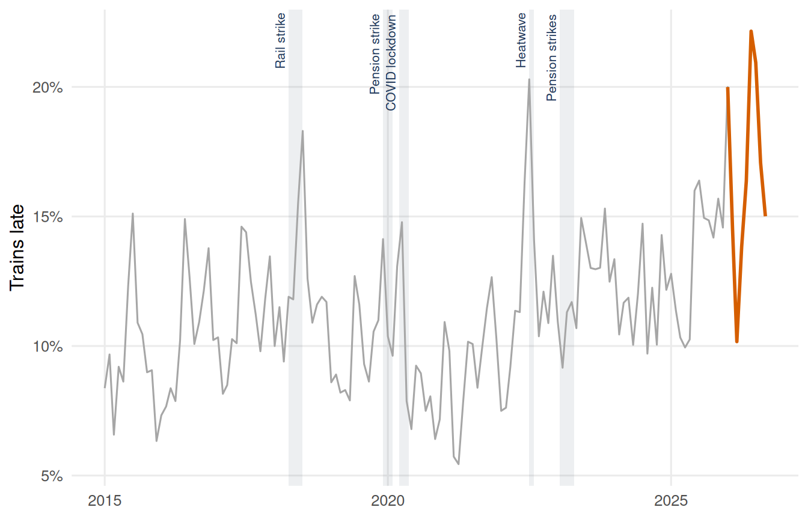
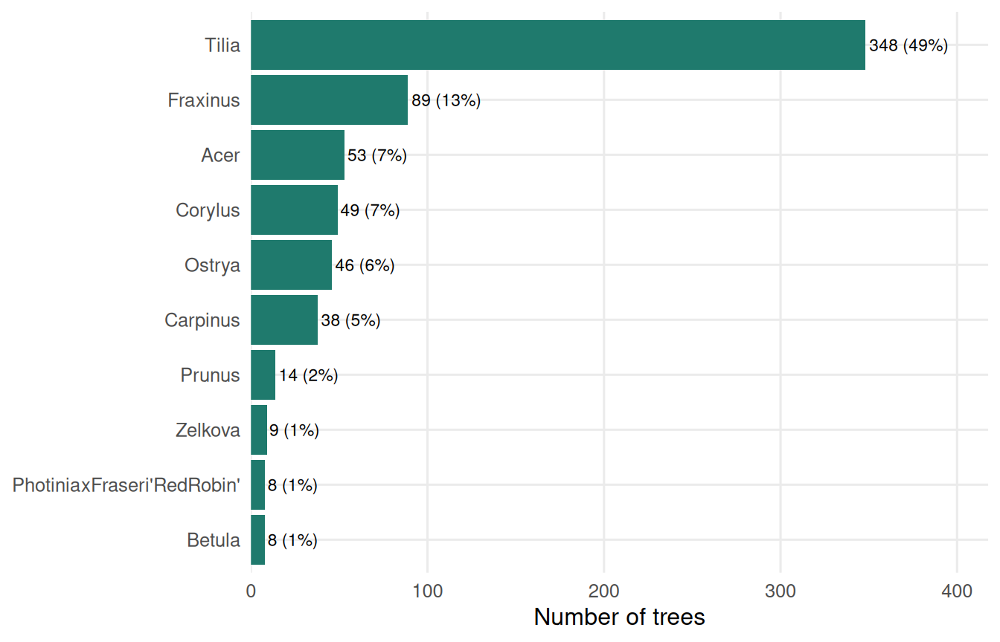

Research · Data Science · Software Engineering
2026-11-16
M. Faizan Chaudhary
Data scientist · ML researcher · Full-stack AI engineer
I build things that learn from data and the software that puts them in people's hands: from a peer-reviewed deep-learning model for Alzheimer's detection to LLM agents, RAG systems and production apps live on AWS.
Research
Deep learning for medical imaging. Published in JICTRA (2026): CNN architecture optimisation for multiclass Alzheimer's detection.
Data science
Reproducible analysis in R and Python: open data, statistical modelling, visual storytelling and LLM-agent evaluation.
Engineering
Full-stack and AI products in production: NestJS, Next.js, React Native, PostgreSQL, pgvector, vLLM and AWS.
Research & data science
Alzheimer's multiclass detection with optimised CNNs
Eleven CNN variants and an optimiser ablation on brain MRI, classifying four stages of dementia. Grew out of my IGNITE-funded final-year project at Bahria University.

Agentic AI for predictive maintenance
An LLM agent that reads aircraft-engine data, calls diagnostic tools and recommends an action, benchmarked against a rule-based baseline.

Late again? What's behind TGV delays
A data story on ten years of French high-speed rail punctuality, from national trends down to routes and causes.

Urban trees of Saint-Germain-en-Laye
A municipal tree inventory: data quality, age structure, health diagnoses and an interactive map, fully reproducible from open data.
Software I've built
Spana
Salon booking and management: REST API, web app and mobile app, bilingual English/Arabic, live on AWS.
Skinny Tax
An AI tax assistant that cites the law: RAG over federal and 50-state tax rules with a self-hosted LLM.
United Checkout
One-click checkout with OTP and map-based address verification, as a Shopify app and a WooCommerce plugin.
Punjab WASA monitoring
A GIS monitoring platform for a government campaign across 41 districts: field reporting, maps and KPI dashboards.
Experience & education
- Sept 2026 – now MSc Smart Data ScienceENSAI, Rennes, France
- Sept 2025 – now Associate Full Stack DeveloperAirbridge Devs
- June 2026 Journal article publishedJICTRA, vol. 17, no. 1
- May – Aug 2025 Associate AI Engineer InternSymtera Technologies
- 2021 – 2025 BSc Computer ScienceBahria University, Lahore
- Jun – Jul 2024 Machine Learning InternRemote
What I work with
Data & ML
Engineering
Infrastructure & reproducibility
Let's work together
Open to data science and AI internships, research collaborations and engineering projects.
Built with Quarto from source. Every figure is recomputed from open data at render time, in an R environment pinned with uvr. How it's built.